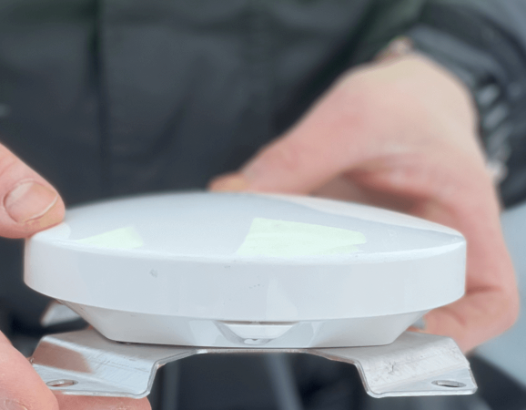
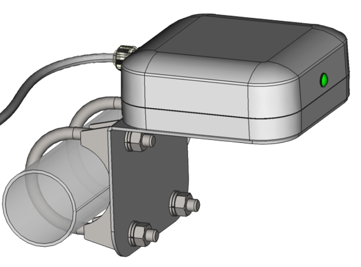
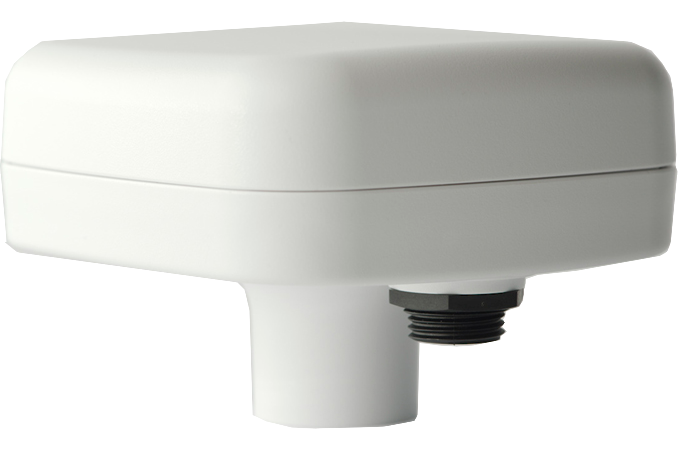
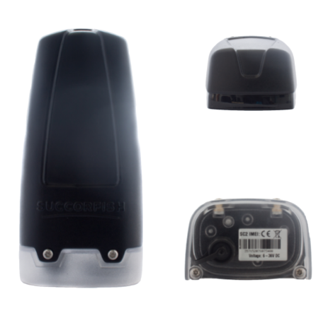

Fiskerisporing
Det har kommet ett krav fra Fiskeridirektoratet om at fiskefartøy under 15 meter skal registrere sin aktivitet.
Pobedit AS er godkjent installatør og forhandler og leverer og monterer VMS fra flere ulike leverandører:
|
|
|
|---|---|
|
|
|
|
|
|
|
|
|
Dette betyr i praksis at en må melde inn når man går til og fra havn, hvor du fisker og hvor du leverer fangsten.
Det er i utgangspunktet ikke tillatt å slå av sporingsutstyret, men om fartøyet går i opplag eller på verksted,
er det mulig å søke om å slå av sporingsutstyret.
Kravene om fiskerisporing fra Fiskeridirektoratet gjennomføres trinnvis:
Det er best å være tidlig ute for montering så ta kontakt for informasjon og tilbud!
Om VMS & ERS:
VMS – ‘Vessel Monitoring System’ - Fiskerisporing er sporing og posisjonsrapportering av båten.
- VMS er Utstyr som sender din posisjon hvert 10. minutt.
- Ingen betjening er nødvendig.
- AIS er ikke godkjent for sporing.
Fartøyets aktivitet skal registreres og det skal blant annet innmeldes:
- Når og hvilken havn du går fra. (VMS)
- Hvor og Når du skal levere fangst. (VMS)
- Hvor og Hva du fisker. (ERS)
ERS – ‘Electronic Reporting System’ - Automatisk Fangstdagbok og Fangst rapportering:
- Du må registrere alle fangstoperasjoner
- Fangsten skal estimeres og registreres
- Registrering gjøres for hver enkel fangstoperasjon
- Registrering skal gjøres for hver enkel linestubbe, garn & teine-lenke
Alle disse samles og sendes i en egen fangstmelding (ERS).
Dersom du opererer utenfor GSM mobildekning så må du ha abonnement med både GSM og Iridium satellitt.
|

|

|
|---|---|
|

|

|